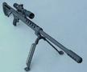

Return to Darxus' Gun Index.
| Pic | Cal. | Cap. | Description | ||||
|---|---|---|---|---|---|---|---|
| 12ga | 8+1 | Mossberg 590 shotgun (part #50665) - 20" barrel, heat shield, parkerized. Beautiful brute force. Considering getting it a bayonet. | |||||
 * * |
.45ACP | 6+1 | Kimber
1911 Compact in black steel. 4" barrel. I love it.
Comfortable to wear (especially in a Milt Sparks Watch Six Dual
Talon holster). I have a target hanging on my living room
wall with a 3" group of 6 rounds shot at 25 yards, standing,
unsupported. My best so far. I've been told it would do about
2" groups at 25 yards in a ransom rest. <Darxus> and the piece of paper on the wall over there, shot at 25y, has 6 holes in a 3" group fired from it <|BigBob> heh <|BigBob> cool <runic> offhand? <Darxus> standing <Darxus> I dunno what you call it <runic> holding it, otherwise unsupported <Darxus> yes <runic> damn <runic> I wish I could do that |
||||
 *
* *
* |
.32ACP | 7+1 | Kel-Tec
P32 in black. Very cute. Half the weight of its closest
competitor. It's most annoying characteristic is that its
ammo is semi-rimmed, which means you can get a rimlock jam,
which takes about 3 hands to clear. This company has a respectable following in the form of the Kel-Tec Owners Group. |
||||
 * * |
.308 Win. | 5 | Remington 700P bolt action hunting rifle. 0.75" diameter groups at 100 yards from a bench rest. | ||||
 * * |
7.62x39mm | 30 |
An
SLR95, which is a Bulgarian copy of an AK-47
With a milled reciever, Steyr barrel, and sporterized
stock. I hope to get groups about 3.5" in diameter at 100
yards. My reasons for preferring the AK-47 over other assault rifles is well summarized in this comment by one who prefers ARs (like the m16):
|
||||
| * | pellets | ? | IZH-46M Air Pistol - for plinking in the basement, probably from Pilk. | ||||
| * | 12ga | 1 | flare gun - possibly an Orion 12ga Alerter | ||||
| * | .50BMG | 1 | The BFG-50.. long range anti-material rifle. | ||||
| .410 | 5 | Thunder5 .410ga revolver | |||||
| .223 | 30 | Bushmaster Carbon 15 Type 21S Pistol, AR-15 based handgun |
{kind=link}
{kind=link}
{kind=link}
{kind=link}
{kind=link}
{kind=link}
* Asterisks by pictures are links to their sources.
Comment on this page.
Return to Darxus' Gun Index.
Return to Darxus' home page.
Mon Dec 27 22:02:44 EST 2004